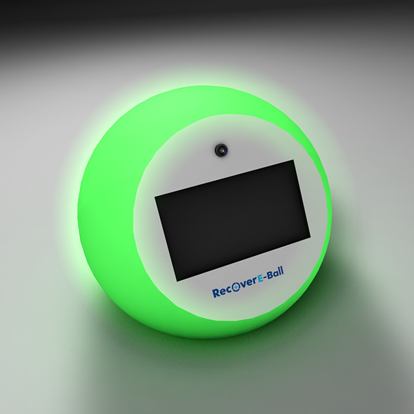
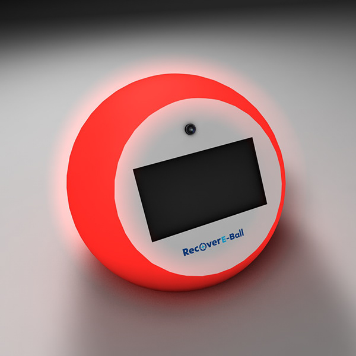
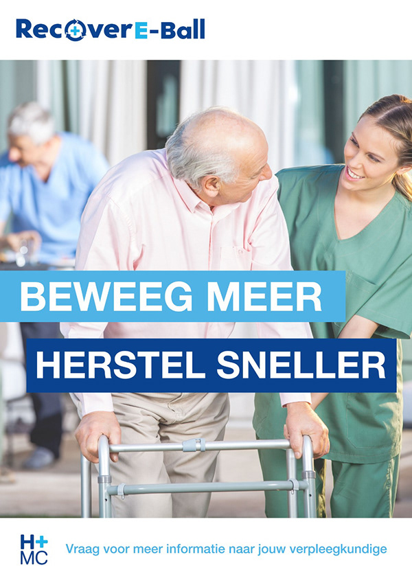
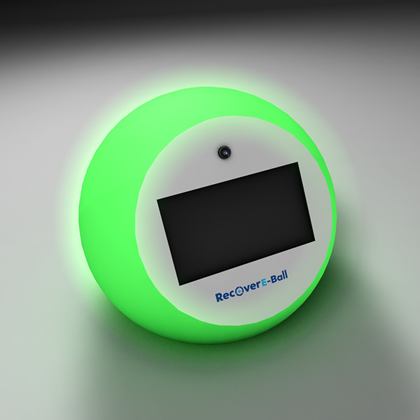
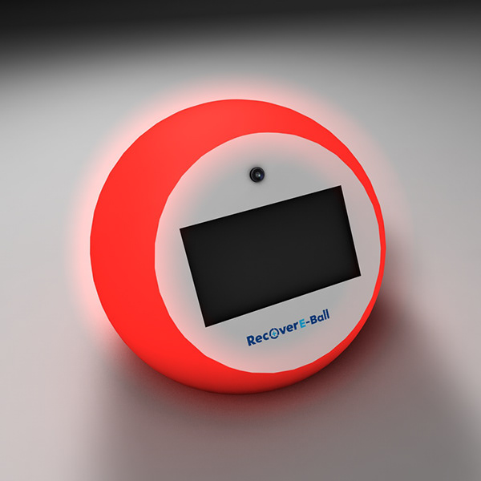
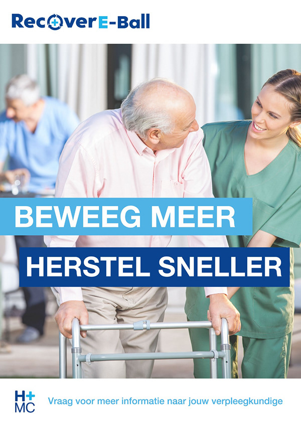

Recover E Ball project
Over dit Project:
In dit project hebben wij een ontwerp gemaakt om patienten van de Oncologie afdeling te motiveren na hun operatie meer te gaan bewegen en hun herstel sneller te laten gaan. Dit ontwerp moest een technologische ontwikkeling zijn en voldoen aan de motivatie.
We hebben meerdere ontwerpen bedracht en deze hebben wij tegen de eisen van de gebruiker afgewogen. Zo is gebleken dat de doelgroep over het algemeen ouderen zijn. Onze vraag was dan ook hoe motiveer je ouderen? Wij zijn dan ook met een concept gekomen die meerdere functies heeft om feedback te geven aan de patient. De Recover E Ball Geeft met drie fases aan of er een bericht beschikbaar is. Groen licht beterkend dat je een video of foto mag zien Rood betekend dat je tijdslimit nog niet voorbij is en wit is het neutrale uitelijk van de ball. Zo kan de Recover E Ball door het scannen van een patienten armbandje een persoonlijke melding van een geliefde weergeven. In eerste instantie kan de ball op de kamer gebruikt worden omdat patienten net uit de operatie komt. Uiteindelijk kan de ball bij de deur gebruikt worden en in de laatste fase kunnen ze de ball op de gang gebruiken. Er zit dan ook een limit op dat niet alle foto's of video's meteen afgespeeld kunnen worden. Deze foto's en video's worden op een online prive portal geupload en zullen na de recovery in een collage naar de patient gemaild worden om ze in huis nog te motiveren. Dit is eigelijke een melding van "kijk dit heb je al bereikt hou dit vol!".
- Project soort: Group
- Doelgroep: Oncologiesche patienten en hun familie
- Merk: Erasmus HMC
- WerkTijd: 90 dagen
- Program's: Adobe Illustrator, Adobe XD